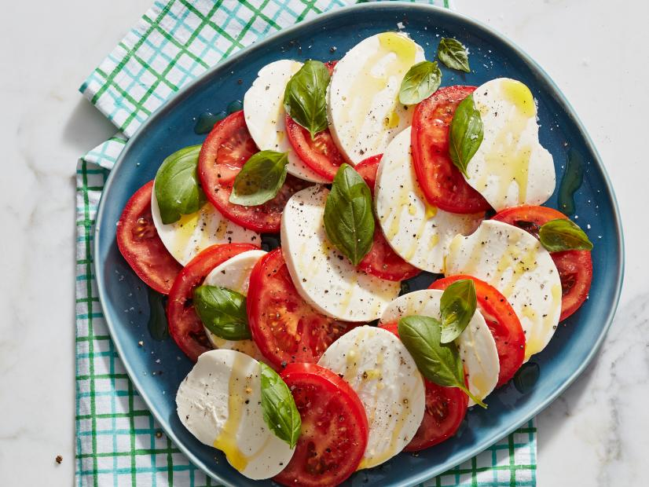

Caprese Salad

What you'll need:
- Three (3) tomatoes (ripe)
- 1lb. of fresh mozzarella
- Fresh basil (1 bunch)
- Extra-virgin olive oil
- Salt flakes and coarse pepper
Instructions
- Have all your ingredients ready.
- Cut the mozzarella into 1/4-inch thick slices.
- Cut your tomatoes around the same size as your cheese slices.
- Layer on a dish alternating slices of mozarella and tomato. At the same time, add a basil leaf in between each.
- Drizzle olive oil and add salt and pepper.
Link to original recipe